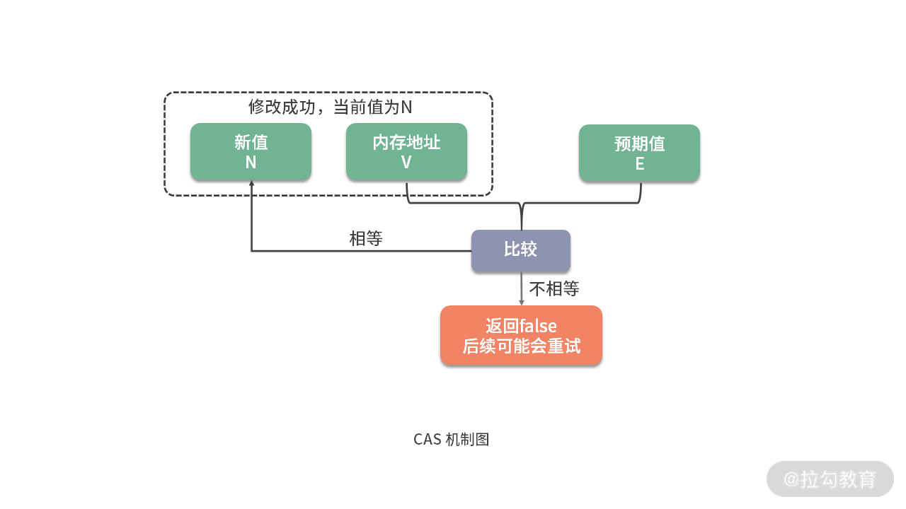
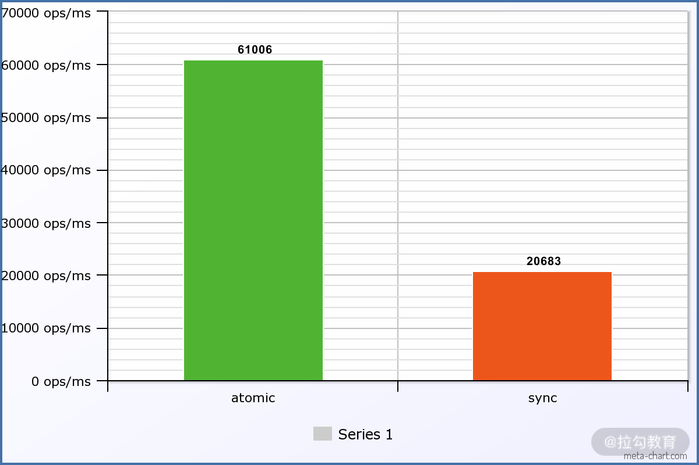
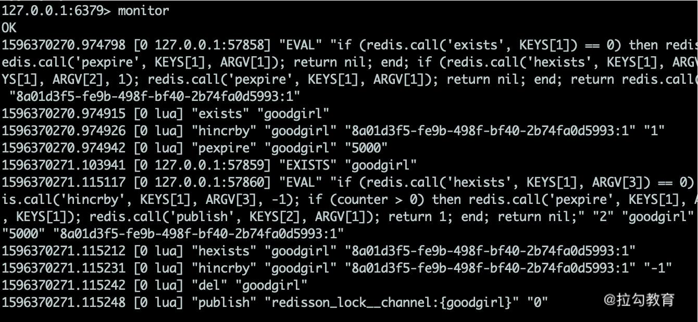

- 00 Java 性能优化，是进阶高级架构师的炼金石.md.html
- 01 理论分析：性能优化，有哪些衡量指标？需要注意什么？.md.html
- 02 理论分析：性能优化有章可循，谈谈常用的切入点.md.html
- 03 深入剖析：哪些资源，容易成为瓶颈？.md.html
- 04 工具实践：如何获取代码性能数据？.md.html
- 05 工具实践：基准测试 JMH，精确测量方法性能.md.html
- 06 案例分析：缓冲区如何让代码加速.md.html
- 07 案例分析：无处不在的缓存，高并发系统的法宝.md.html
- 08 案例分析：Redis 如何助力秒杀业务.md.html
- 09 案例分析：池化对象的应用场景.md.html
- 10 案例分析：大对象复用的目标和注意点.md.html
- 11 案例分析：如何用设计模式优化性能.md.html
- 12 案例分析：并行计算让代码“飞”起来.md.html
- 13 案例分析：多线程锁的优化.md.html
- 14 案例分析：乐观锁和无锁.md.html
- 15 案例分析：从 BIO 到 NIO，再到 AIO.md.html
- 16 案例分析：常见 Java 代码优化法则.md.html
- 17 高级进阶：JVM 如何完成垃圾回收？.md.html
- 18 高级进阶：JIT 如何影响 JVM 的性能？.md.html
- 19 高级进阶：JVM 常见优化参数.md.html
- 20 SpringBoot 服务性能优化.md.html
- 21 性能优化的过程方法与求职面经总结.md.html
- 22 结束语 实践出真知.md.html
14 案例分析：乐观锁和无锁
上一课时，我们提到了 concurrent 下面的 Lock，了解到它可以在 API 级别，对共享资源进行更细粒度的控制。Lock 是基于 AQS（AbstractQueuedSynchronizer）实现的，AQS 是用来构建 Lock 或其他同步组件的基础，它使用了一个 int 成员变量来表示state（同步状态），通过内置的 FIFO 队列，来完成资源获取线程的排队。
synchronized的方式加锁，会让线程在 BLOCKED 状态和 RUNNABLE 状态之间切换，在操作系统上，就会造成用户态和内核态的频繁切换，效率就比较低。
与 synchronized 的实现方式不同，AQS中很多数据结构的变化，都是依赖 CAS 进行操作的，而CAS 就是乐观锁的一种实现。
CAS
CAS 是 Compare And Swap 的缩写，意思是比较并替换。
如下图，CAS 机制当中使用了 3 个基本操作数：内存地址V、期望值E、要修改的新值N。更新一个变量的时候，只有当变量的预期值E 和内存地址V 的真正值相同时，才会将内存地址V 对应的值修改为 N。

如果本次修改不成功，怎么办？很多情况下，它将一直重试，直到修改为期望的值。
拿 AtomicInteger 类来说，相关的代码如下：
public final boolean compareAndSet(int expectedValue, int newValue) {
return U.compareAndSetInt(this, VALUE, expectedValue, newValue);
}
比较和替换是两个动作，CAS 是如何保证这两个操作的原子性呢？
我们继续向下追踪，发现是 jdk.internal.misc.Unsafe 类实现的，循环重试就是在这里发生的：
@HotSpotIntrinsicCandidate
public final int getAndAddInt(Object o, long offset, int delta) {
int v;
do {
v = getIntVolatile(o, offset);
} while (!weakCompareAndSetInt(o, offset, v, v + delta));
return v;
}
追踪到 JVM 内部，在 linux 机器上参照 os_cpu/linux_x86/atomic_linux_x86.hpp。可以看到，最底层的调用，是汇编语言，而最重要的，就是cmpxchgl指令。到这里没法再往下找代码了，因为 CAS 的原子性实际上是硬件 CPU 直接保证的。
template<>
template<typename T>
inline T Atomic::PlatformCmpxchg<4>::operator()(T exchange_value,
T volatile* dest,
T compare_value,
atomic_memory_order /* order */) const {
STATIC_ASSERT(4 == sizeof(T));
__asm__ volatile ("lock cmpxchgl %1,(%3)"
: "=a" (exchange_value)
: "r" (exchange_value), "a" (compare_value), "r" (dest)
: "cc", "memory");
return exchange_value;
}
那 CAS 实现的原子类，性能能提升多少呢？我们开启了 20 个线程，对共享变量进行自增操作。
从测试结果得知，针对频繁的写操作，原子类的性能是 synchronized 方式的 3 倍。

CAS 原理，在近几年面试中的考察率越来越高，主要是由于乐观锁在读多写少的互联网场景中，使用频率愈发频繁。
你可能发现有一些乐观锁的变种，但最基础的思想是一样的，都是基于比较替换并替换的基本操作。
关于 Atomic 类，还有一个小细节，那就是它的主要变量，使用了 volatile 关键字进行修饰。代码如下，你知道它是用来干什么的吗？
private volatile int value;
答案：使用了 volatile 关键字的变量，每当变量的值有变动的时候，都会将更改立即同步到主内存中；而如果某个线程想要使用这个变量，就先要从主存中刷新到工作内存，这样就确保了变量的可见性。有了这个关键字的修饰，就能保证每次比较的时候，拿到的值总是最新的。
乐观锁
从上面的描述可以看出，乐观锁严格来说，并不是一种锁，它提供了一种检测冲突的机制，并在有冲突的时候，采取重试的方法完成某项操作。假如没有重试操作，乐观锁就仅仅是一个判断逻辑而已。
从这里可以看出乐观锁与悲观锁的一些区别。悲观锁每次操作数据的时候，都会认为别人会修改，所以每次在操作数据的时候，都会加锁，除非别人释放掉锁。
乐观锁在检测到冲突的时候，会有多次重试操作，所以之前我们说，乐观锁适合用在读多写少的场景；而在资源冲突比较严重的场景，乐观锁会出现多次失败的情况，造成 CPU 的空转，所以悲观锁在这种场景下，会有更好的性能。
为什么读多写少的情况，就适合使用乐观锁呢？悲观锁在读多写少的情况下，不也是有很少的冲突吗？
其实，问题不在于冲突的频繁性，而在于加锁这个动作上。
- 悲观锁需要遵循下面三种模式：一锁、二读、三更新，即使在没有冲突的情况下，执行也会非常慢；
- 如之前所说，乐观锁本质上不是锁，它只是一个判断逻辑，资源冲突少的情况下，它不会产生任何开销。
我们上面谈的 CAS 操作，就是一种典型的乐观锁实现方式，我们顺便看一下 CAS 的缺点，也就是乐观锁的一些缺点。
- 在并发量比较高的情况下，有些线程可能会一直尝试修改某个资源，但由于冲突比较严重，一直更新不成功，这时候，就会给 CPU 带来很大的压力。JDK 1.8 中新增的 LongAdder，通过把原值进行拆分，最后再以 sum 的方式，减少 CAS 操作冲突的概率，性能要比 AtomicLong 高出 10 倍左右。
- CAS 操作的对象，只能是单个资源，如果想要保证多个资源的原子性，最好使用synchronized 等经典加锁方式
- ABA 问题，意思是指在 CAS 操作时，有其他的线程现将变量的值由 A 变成了 B，然后又改成了 A，当前线程在操作时，发现值仍然是 A，于是进行了交换操作。这种情况在某些场景下可不用过度关注，比如 AtomicInteger，因为没什么影响；但在一些其他操作，比如链表中，会出现问题，必须要避免。可以使用 AtomicStampedReference 给引用标记上一个整型的版本戳，来保证原子性。
乐观锁实现余额更新
对余额的操作，是交易系统里最常见的操作了。先读出余额的值，进行一番修改之后，再写回这个值。
对余额的任何更新，都需要进行加锁。因为读取和写入操作并不是原子性的，如果同一时刻发生了多次与余额的操作，就会产生不一致的情况。
举一个比较明显的例子。你同时发起了一笔消费 80 元和 5 元的请求，经过操作之后，两个支付都成功了，但最后余额却只减了 5 元。相当于花了 5 块钱买了 85 元的东西。请看下面的时序：
请求A：读取余额100
请求B：读取余额100
请求A：花掉5元，临时余额是95
请求B：花掉80元，临时余额是20
请求B：写入余额20成功
请求A：写入余额95成功
我曾经在线上遇到过一个 P0 级别的 BUG，用户通过构造请求，频繁发起 100 元的提现和 1 分钱的提现，造成了比较严重的后果，你可以自行分析一下这个过程。
所以，对余额操作加锁，是必须的。 这个过程和多线程的操作是类似的，不过多线程是单机的，而余额的场景是分布式的。
对于数据库来说，就可以通过加行锁进行解决，拿 MySQL 来说，MyISAM 是不支持行锁的，我们只能使用 InnoDB，典型的 SQL 语句如下：
select * from user where userid={id} for update
使用 select for update 这么一句简单的 SQL，其实在底层就加了三把锁，非常昂贵。
默认对主键索引加锁，不过这里直接忽略； 二级索引 userid={id} 的 next key lock（记录+间隙锁）； 二级索引 userid={id} 的下一条记录的间隙锁。
所以，在现实场景中，这种悲观锁都已经不再采用，第一是因为它不够通用，第二是因为它非常昂贵。
一种比较好的办法，就是使用乐观锁。根据上面我们对于乐观锁的定义，就可以抽象两个概念：
- 检测冲突的机制：先查出本次操作的余额E，在更新时判断是否与当前数据库的值相同，如果相同则执行更新动作
- 重试策略：有冲突直接失败，或者重试5次后失败
伪代码如下，可以看到这其实就是 CAS。
# old_balance获取
select balance from user where userid={id}
# 更新动作
update user set balance = balance - 20
where userid={id}
and balance >= 20
and balance = $old_balance
还有一种 CAS 的变种，就是使用版本号机制。通过在表中加一个额外的字段 version，来代替对余额的判断。这种方式不用去关注具体的业务逻辑，可控制多个变量的更新，可扩展性更强，典型的伪代码如下：
version,balance = dao.getBalance(userid)
balance = balance - cost
dao.exec("
update user
set balance = balance - 20
version = version + 1
where userid=id
and balance >= 20
and version = $old_version
")
Redis 分布式锁
Redis 的分布式锁，是互联网行业经常使用的方案。很多同学知道是使用 setnx 或者带参数的 set 方法来实现的，但 Redis 的分布式锁其实有很多坑。
在“08 | 案例分析：Redis 如何助力秒杀业务”中，我们演示了一个使用 lua 脚本来实现秒杀场景。但在现实情况中，秒杀业务通常不会这么简单，它需要在查询和用户扣减操作之间，执行一些其他业务。
比如，进行一些商品校验、订单生成等，这个时候，使用分布式锁，可以实现更灵活地控制，它主要依赖 SETNX 指令或者带参数的 SET 指令。
- 锁创建：SETNX [KEY] [VALUE] 原子操作，意思是在指定的 KEY 不存在的时候，创建一个并返回 1，否则返回 0。我们通常使用参数更全的 set key value [EX seconds] [PX milliseconds] [NX|XX] 命令，同时对 KEY 设置一个超时时间。
- 锁查询：GET KEY，通过简单地判断 KEY 是否存在即可
- 锁删除：DEL KEY，删掉相应的 KEY 即可
根据原生的语义，我们有下面简单的 lock 和 unlock 方法，lock 方法通过不断的重试，来获取到分布式锁，然后通过删除命令销毁分布式锁。
public void lock(String key, int timeOutSecond) {
for (; ; ) {
boolean exist = redisTemplate.opsForValue().setIfAbsent(key, "", timeOutSecond, TimeUnit.SECONDS);
if (exist) {
break;
}
}
}
public void unlock(String key) {
redisTemplate.delete(key);
}
这段代码中的问题很多，我们只指出其中一个最严重的问题。在多线程中，执行 unlock方法的，只能是当前的线程，但在上面的实现中，由于超时存在的原因，锁被提前释放了。考虑下面 3 个请求的时序：
- 请求A： 获取了资源 x 的锁，锁的超时时间为 5 秒
- 请求A： 由于业务执行时间比较长，业务阻塞等待，超过 5 秒
- 请求B： 第 6 秒发起请求，结果发现锁 x 已经失效，于是顺利获得锁
- 请求A： 第 7 秒，请求 A 执行完毕，然后执行锁释放动作
- 请求C： 请求 C 在锁刚释放的时候发起了请求，结果顺利拿到了锁资源
此时，请求 B 和请求 C 都成功地获取了锁 x，我们的分布式锁失效了，在执行业务逻辑的时候，就容易发生问题。
所以，在删除锁的时候，需要判断它的请求方是否正确。首先，获取锁中的当前标识，然后，在删除的时候，判断这个标识是否和解锁请求中的相同。
可以看到，读取和判断是两个不同的操作，在这两个操作之间同样会有间隙，高并发下会出现执行错乱问题，而稳妥的方案，是使用 lua 脚本把它们封装成原子操作。
改造后的代码如下：
public String lock(String key, int timeOutSecond) {
for (; ; ) {
String stamp = String.valueOf(System.nanoTime());
boolean exist = redisTemplate.opsForValue().setIfAbsent(key, stamp, timeOutSecond, TimeUnit.SECONDS);
if (exist) {
return stamp;
}
}
}
public void unlock(String key, String stamp) {
redisTemplate.execute(script, Arrays.asList(key), stamp);
}
相应的 lua 脚本如下：
local stamp = ARGV[1]
local key = KEYS[1]
local current = redis.call("GET",key)
if stamp == current then
redis.call("DEL",key)
return "OK"
end
可以看到，reids 实现分布式锁，还是有一定难度的。推荐使用 redlock 的 Java 客户端实现 redisson，它是根据 Redis 官方提出的分布式锁管理方法实现的。
这个锁的算法，处理了分布式锁在多 redis 实例场景下，以及一些异常情况的问题，有更高的容错性。比如，我们前面提到的锁超时问题，在 redisson 会通过看门狗机制对锁进行无限续期，来保证业务的正常运行。
我们可以看下 redisson 分布式锁的典型使用代码。
String resourceKey = "goodgirl";
RLock lock = redisson.getLock(resourceKey);
try {
lock.lock(5, TimeUnit.SECONDS);
//真正的业务
Thread.sleep(100);
} catch (Exception ex) {
ex.printStackTrace();
} finally {
if (lock.isLocked()) {
lock.unlock();
}
}
使用 redis 的 monitor 命令，可以看到具体的执行步骤，这个过程还是比较复杂的。

无锁
无锁（Lock-Free），指的是在多线程环境下，在访问共享资源的时候，不会阻塞其他线程的执行。
在 Java 中，最典型的无锁队列实现，就是 ConcurrentLinkedQueue，但它是无界的，不能够指定它的大小。ConcurrentLinkedQueue 使用 CAS 来处理对数据的并发访问，这是无锁算法得以实现的基础。
CAS 指令不会引起上下文切换和线程调度，是非常轻量级的多线程同步机制。它还把入队、出队等对 head 和 tail 节点的一些原子操作，拆分出更细的步骤，进一步缩小了 CAS 控制的范围。
ConcurrentLinkedQueue 是一个非阻塞队列，性能很高，但不是很常用。千万不要和阻塞队列 LinkedBlockingQueue（内部基于锁）搞混了。
Disruptor 是一个无锁、有界的队列框架，它的性能非常高。它使用 RingBuffer、无锁和缓存行填充等技术，追求性能的极致，在极高并发的场景，可以使用它替换传统的 BlockingQueue。
在一些中间件中经常被使用，比如日志、消息等（Storm 使用它实现进程内部通信机制），但它在业务系统上很少用，除非是类似秒杀的场景。因为它的编程模型比较复杂，而且业务的主要瓶颈主要在于缓慢的 I/O 上，而不是慢在队列上。
小结
本课时，我们从 CAS 出发，逐步了解了乐观锁的一些概念和使用场景。
乐观锁严格来说，并不是一种锁。它提供了一种检测冲突的机制，并在有冲突的时候，采取重试的方法完成某项操作。假如没有重试操作，乐观锁就仅仅是一个判断逻辑而已。
悲观锁每次操作数据的时候，都会认为别人会修改，所以每次在操作数据的时候，都会加锁，除非别人释放掉锁。
乐观锁在读多写少的情况下，之所以比悲观锁快，是因为悲观锁需要进行很多额外的操作，并且乐观锁在没有冲突的情况下，也根本不耗费资源。但乐观锁在冲突比较严重的情况下，由于不断地重试，其性能在大多数情况下，是不如悲观锁的。
由于乐观锁的这个特性，乐观锁在读多写少的互联网环境中被广泛应用。
本课时，我们主要看了在数据库层面的一个乐观锁实现，以及Redis 分布式锁的实现，后者在实现的时候，还是有很多细节需要注意的，建议使用 redisson 的 RLock。
当然，乐观锁有它的使用场景。当冲突非常严重的情况下，会进行大量的无效计算；它也只能保护单一的资源，处理多个资源的情况下就捉襟见肘；它还会有 ABA 问题，使用带版本号的乐观锁变种可以解决这个问题。
这些经验，我们都可以从 CAS 中进行借鉴。多线程环境和分布式环境有很多相似之处，对于乐观锁来说，我们找到一种检测冲突的机制，就基本上实现了。
下面留一个问题，请你分析解答：
一个接口的写操作，大约会花费 5 分钟左右的时间。它在开始写时，会把数据库里的一个字段值更新为 start，写入完成后，更新为 done。有另外一个用户也想写入一些数据，但需要等待状态为 done。
于是，开发人员在 WEB 端，使用轮询，每隔 5 秒，查询字段值是否为 done，当查询到正确的值，即可开始进行数据写入。
开发人员的这个方法，属于乐观锁吗？有哪些潜在问题？应该如何避免？欢迎你在下方留言区作答，我将一一解答，与你讨论。